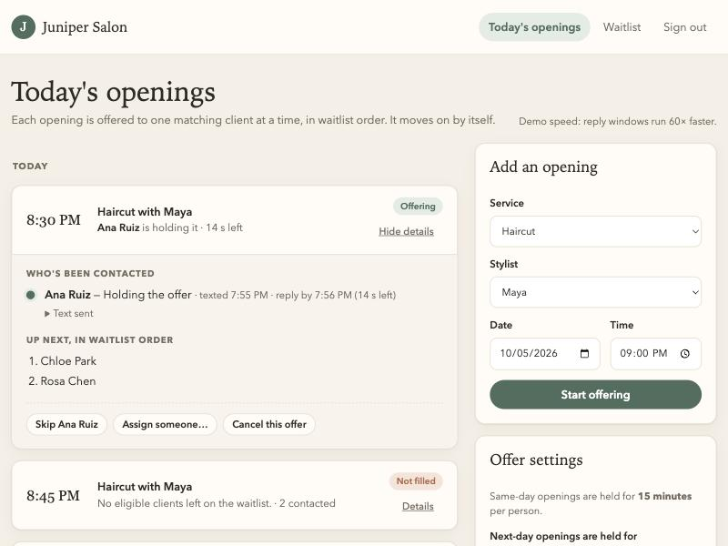
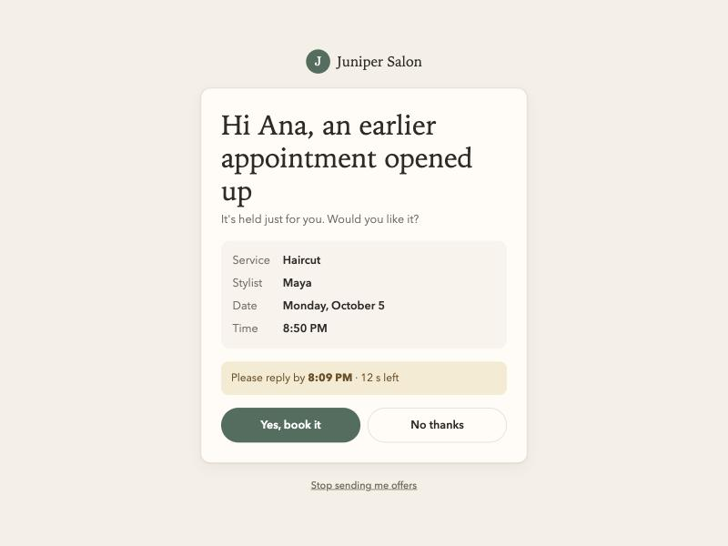

The problem
Note the opening in Square → scan the Google Sheet for a match → text someone from the salon phone → wait → try the next person.
cancellations a week within 48 hours of the appointment
of those openings get refilled today
of back-and-forth for a hard-to-fill opening
Your goal: refill at least half, without anyone repeatedly checking on it, and never double-book.
What the prototype does
You add the opening: service, stylist, date, time.
The earliest-joined match gets a text: same service, free at that time, right stylist if they have a preference. It shows service, stylist, date, time and a reply-by time, with no price.
It's held just for them: 15 minutes for same-day openings, an adjustable window for next-day ones.
"Yes" books it. The client gets a confirmation, the front desk sees who accepted with the details, you add it to Square, and they leave the waitlist.
"No", no reply, or a failed text moves it to the next match automatically. It stops when the appointment is too close or no one is left, and marks the opening Not filled with the full history.

Front desk: Ana is holding the offer with a live countdown. Chloe and Rosa are next in line.
For you, Carla, and your clients

What's real and what isn't yet
| Same-day hold | 15 min (your choice) |
| Next-day hold | 2 hours |
| Quiet hours | 9 PM – 8 AM |
| Stop offering | 30 min before |
All adjustable on the front-desk page, no technical help needed.
A practical next step
Pick your times: the next-day reply window and quiet hours (about five minutes).
Connect a real texting service using the salon's number, and replace the shared passcode with proper sign-ins.
Move the Google Sheet into the waitlist in one import, keeping each client's join date so the order is fair.
Run every cancellation within 48 hours through it for two weeks. Keep updating Square as you do today.
Openings refilled out of every 10 (today ~3, goal 5+), double-bookings (goal: zero), and time you and Carla spend texting.